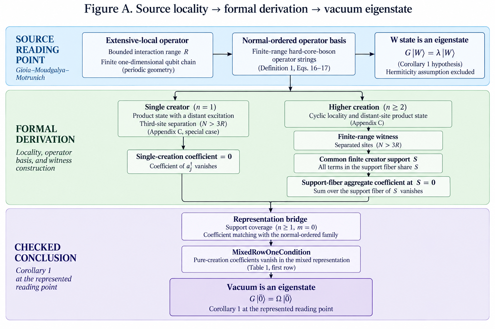
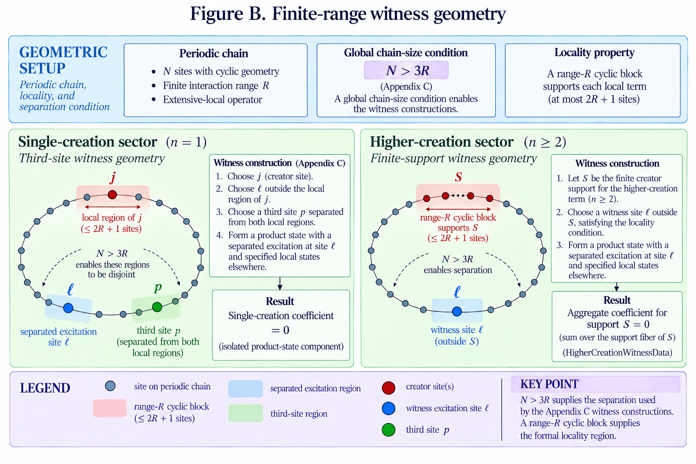
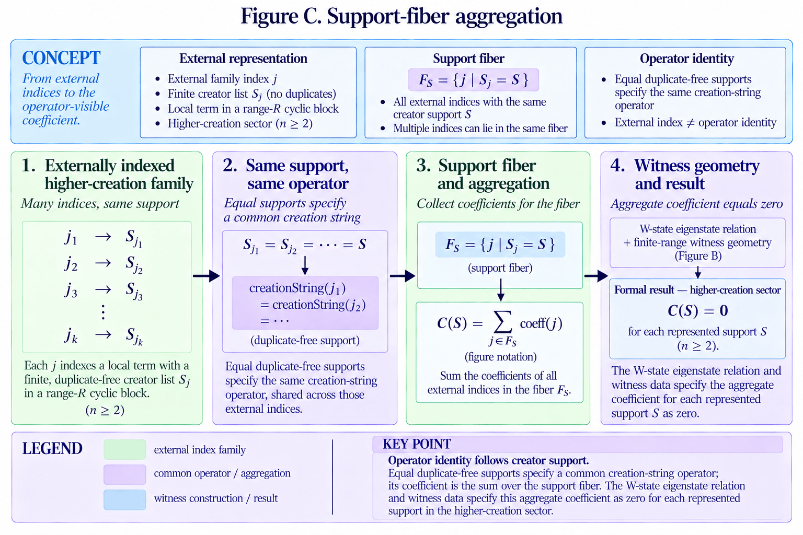
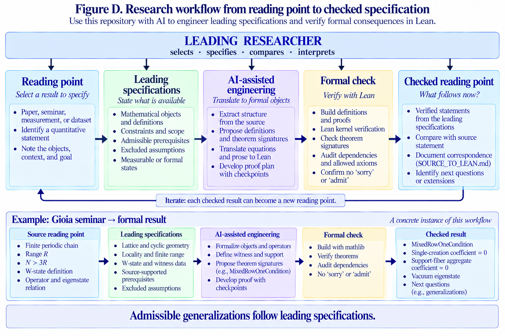

W state
A coherent superposition of single-excitation basis states on the finite periodic chain.
Lab report · W-state locality
A source result about an extensive-local operator, the W state, and the vacuum is reconstructed as explicit finite-range geometry, operator representations, and checked mathematical consequences. The formalization closes at Checkpoint 52 and provides a checked reading point another researcher can inspect, reproduce, and lead forward.
If the W state is an eigenstate of an extensive-local operator, then the vacuum state is also an eigenstate.
A reading point is a specified statement selected from a source for comparison, formalization, or subsequent measurement.
Figure A · Overview
The source argument is separated into an operator representation, two pure-creation sectors, a representation bridge, and a checked vacuum-eigenstate conclusion.

A coherent superposition of single-excitation basis states on the finite periodic chain.
The product state with no excitations. Relevant normal-ordered terms containing annihilation operators annihilate this state.
Finite interaction range constrains where a local operator term can act and supplies separation geometry used in the proof.
A proof assistant. Source relationships become explicit definitions and theorem hypotheses, and Lean checks what follows.
Figure B · Geometry
Appendix C gives \(N>3R\) as a sufficient condition for the separation arguments used in the pure-creation obstruction. The formal route records this as explicit cyclic witness geometry.

Figure C · Representation
External indices need not identify distinct creation-string operators. Equal duplicate-free creator supports specify a common operator, so the operator-visible coefficient is the sum over the corresponding support fiber.

The closed route uses support coverage plus support-fiber aggregate coefficients rather than injective indexing of higher-creation supports.
Checkpoint 52
The final theorem begins from the represented mixed normal-ordered operator together with explicit geometry, eigenstate, support, coverage, and representation specifications.
theorem corollary_one_from_periodic_overlap_aggregate_closed
...
(hNR : 3 * R < N)
...
(hcovered : HigherCreationMixedSupportCovered term higherCreators)
(hrep : PureCreationAggregateRepresentationMatches
mixedCoeff term singleCoeff higherCoeff higherCreators) :
IsEigenstate
(mixedNormalOrderedOperator Ω mixedCoeff term)
(vacuumKet N) Ω
The end-to-end represented route derives the vacuum eigenstate conclusion without a support-injectivity hypothesis. Hermiticity assumption excluded. The completed CP52 audit records a full build, no sorry or admit, and only propext, Classical.choice, and Quot.sound.
Figure D · Research workflow
The worked formalization can now be read outward. A leading researcher selects the source result and its leading specifications; AI can assist the engineering of formal objects and proof checkpoints; formal verification checks the stated implications; the checked result returns to the researcher as a possible next reading point.

Bring a quantitative result from a paper, seminar, measurement, or model and identify the exact reading point.
State objects, relationships, constraints, source-supported prerequisites, excluded assumptions, and target scope.
Use AI-assisted engineering to propose source mappings, definitions, theorem signatures, tests, and proof checkpoints.
Compare the proposed formal specification with the source. The theorem signatures provide the authoritative formal reading point.
Build the project, inspect dependencies, audit axioms and placeholders, and distinguish supplied specifications from derived consequences.
Return the checked result to the leading researcher and select what follows now as a new reading point.
Evidence trail
The web page is the first-reading interface. The report carries the technical narrative, the specification records the closed target, the source map separates source claims from formal specifications, and theorem signatures provide the checked dependency route.
Source evidence supplies prerequisites. Leading specifications constrain the formal route. Checked consequences specify what follows now.